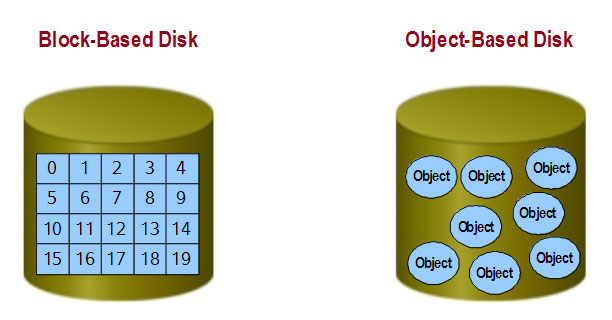

Storage¶
Concept¶
存储在云计算中扮演了重要的位置，大数据时代的即将来临，推动了存储的不断发展，就我个人见过的集中式存储就给我留下很深的印象。 （又大又沉，我们几个人搬差点把腰闪了，NetApp的大存储，得有4百斤以上）
Block storage: 块存储，典型的是SAN，提供空的块，由用户自己进行做文件系统。
File system storage: 文件存储，典型的是NAS，提供文件系统。
Object-based storage: 对象存储，核心是将数据通路和控制通路（元数据）分离，并且基于对象存储设备构建存储系统。
ObjectStorage¶
对象存储是当前大力推崇的存储方案，上面每个OSD能智能的管理上面的数据。它综合了块存储的高效访问速度和共享文件系统的优点。 传统的文件服务器既负责管理VFS，又负责管理inode；而对象存储将inode的管理分布在OSD节点中。 对象存储可以同时读取多个OSD中的数据，实现并行的高吞吐量。
传统的存储与对象存储的对比：
对象存储的数据组成：

传统的访问层次和虚拟数据访问模型：

Metadata Server(MDS, 元数据服务)¶
MDS control the interaction between client and OSD object. It supplies the metadata, including logical view, OSD.
MDS提供了client直接访问对象的能力，OSD收到请求时先验证该能力，才可以访问数据；
文件和目录的访问管理；
Client Cache的一致性，MDS支持基于Client的Cache，当Cache文件发生改变时，将通知Client刷新Cache。
Object Storage Client¶
计算节点上实现对象存储的Client，对象存储给用户的接口也是标准的POSIX文件访问接口。
- 客户端应用发出请求；
- 文件系统向元数据服务器发送请求，获取数据所在的OSD；
- 直接想所在OSD发送请求；
- OSD得到请求后，判断要读取的OSD，并根据其认证方式要求客户端认证，授权后将数据发送给客户端；
- 文件系统收到OSD返回的数据后，读取结束。
最佳实践¶
- Mysql主从带来的一些问题： 在Mysql设置主写从读的时候，会出现一个读取不到的情况，因为默认的同步策略是异步的，不能及时写到从数据库。 对于数据强一致性的情况下，设置同步策略为写到从数据库后同步返回，这样降低效率换取一致性；也可以设置缓存进行读取，写后立即 更新redis，然后读取操作从redis取；也可以通过Spring的DynamicDataSource进行动态的数据库选择。